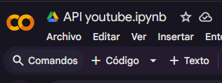
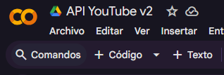
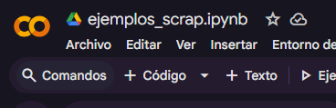
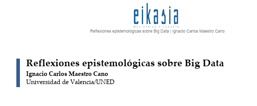
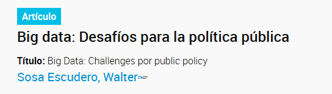
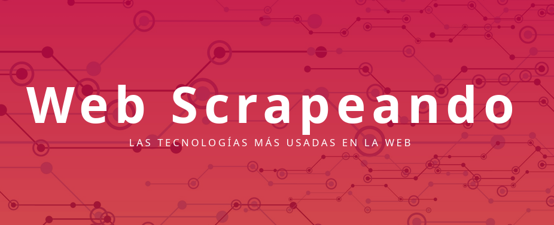
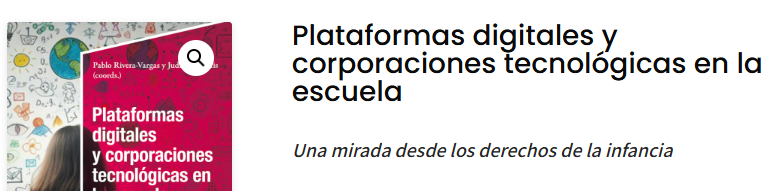
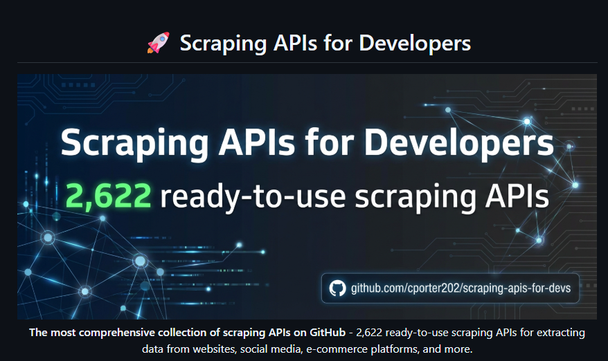

Charlas abiertas sobre datos e investigación educativa
Un dato ya pronto serás
(Inspirado en Una sombra ya pronto serás de Osvaldo Soriano)
Materiales para ejercicios
Cuadernos de Colab para practicar scraping, APIs y procesamiento de datos.

Colab
Ejercicio 1
Extracción de comentarios y metadatos de videos de YouTube
Este recurso muestra cómo utilizar la API de YouTube desde Python para recopilar información de un video y analizar la interacción de su audiencia. Recupera título, canal creador, descripción, visualizaciones, antigüedad de publicación y comentarios recientes con datos de usuarios, fecha y cantidad de “me gusta”.
Los datos se organizan con Pandas y se exportan a Excel, facilitando análisis sobre comunicación digital, audiencias, opinión pública, contenidos educativos o redes sociales.
Abrir Colab
Colab
Ejercicio 2
Extracción masiva de comentarios de múltiples videos de YouTube
Este recurso amplía el uso de la API de YouTube para analizar automáticamente los comentarios de varios videos al mismo tiempo. A partir de una lista de IDs, recorre cada video, recupera metadatos principales y extrae comentarios mediante paginación.
La información se consolida en una tabla de Pandas y se exporta a Excel. Es útil para estudios comparativos de audiencias, análisis de participación, monitoreo de campañas, investigación educativa y exploración de interacciones en redes sociales a escala.
Abrir Colab
Colab
Ejercicio 3
Extracción de titulares web con control ético y marca temporal
Este recurso presenta un ejemplo práctico de web scraping con Python orientado a recolectar titulares periodísticos. Verifica previamente el archivo robots.txt, descarga el HTML con Requests y analiza el contenido con BeautifulSoup.
Extrae titulares, enlaces y fecha/hora de captura, evitando duplicados. Los resultados se organizan con Pandas y se exportan a Excel para monitoreo de medios, análisis de agenda pública y ejercicios de scraping responsable.
Abrir ColabBibliografía y recursos
Lecturas, repositorios y materiales para profundizar el trabajo con plataformas, scraping y datos digitales.

PDF
Lectura
Reflexiones epistemológicas sobre Big Data
Texto de Ignacio Carlos Maestro Cano, Universidad de Valencia/UNED, para acompañar la discusión conceptual sobre Big Data, conocimiento y producción de evidencia.
Abrir PDF
CONICET
Repositorio
Big data: desafíos para la política pública
Texto de Walter Sosa Escudero, publicado en marzo de 2020 por el Centro Latinoamericano de Administración para el Desarrollo en la revista Reforma y Democracia.
Abrir recurso
PDF
Web scraping
David Vaquero - wescrapeando
Material introductorio para trabajar la extracción automatizada de información publicada en la web y reconocer procedimientos básicos de scraping.
Abrir PDF
Libro
Plataformas
Plataformas digitales y corporaciones tecnológicas en la escuela
Una mirada desde los derechos de la infancia. Libro coordinado por Pablo Rivera-Vargas y Judith Jacovkis sobre tecnología, plataformas digitales y educación.
Abrir libro
GitHub
APIs
Biblioteca de APIs para Web Scraping y Automatización
Esta colección reúne más de 2.600 APIs listas para usar que permiten extraer, procesar y aprovechar datos de múltiples fuentes en internet sin desarrollar scrapers desde cero.
Es un recurso útil para análisis de datos, inteligencia de negocios, monitoreo de mercados, automatización de procesos y aplicaciones basadas en inteligencia artificial.
Abrir repoVideo de la charla
Registro completo de la presentación.